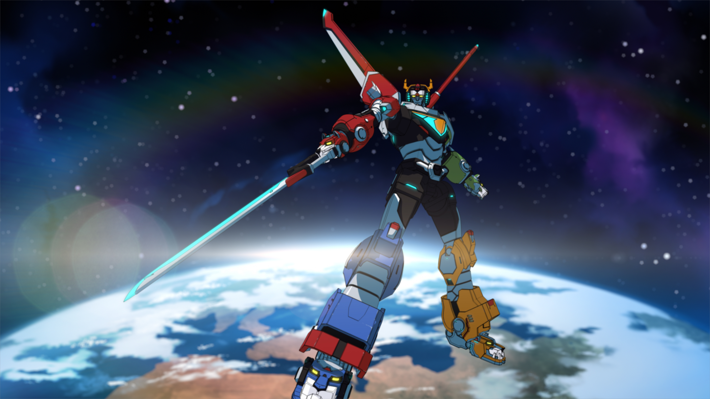
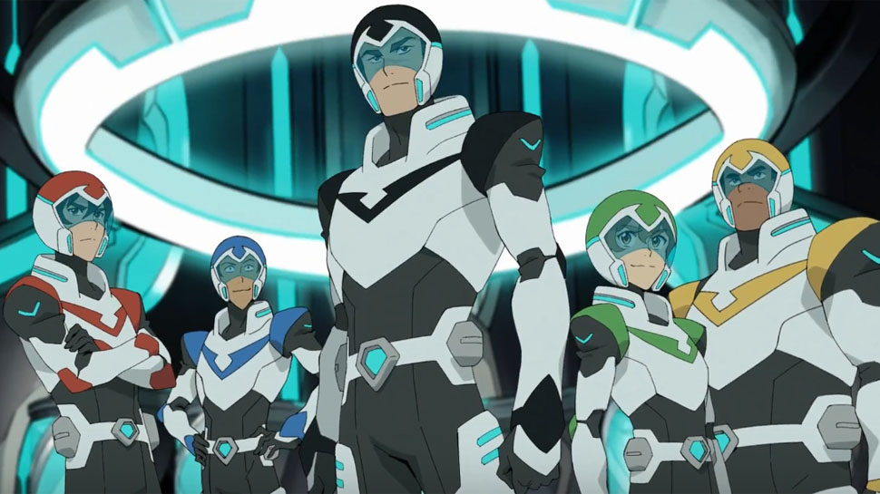
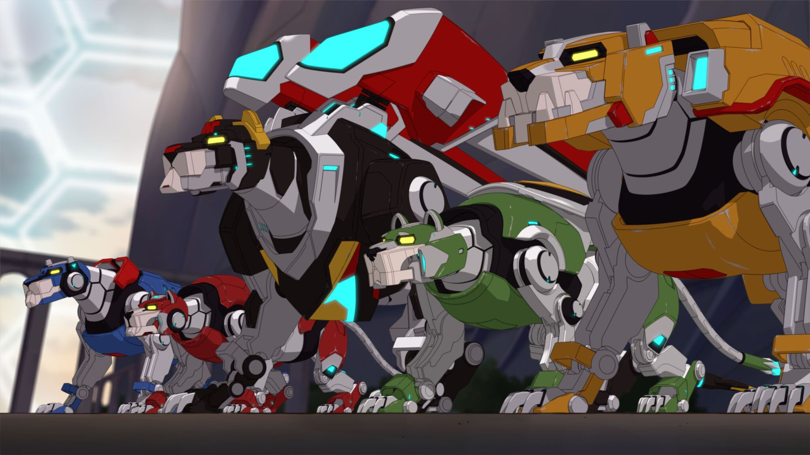
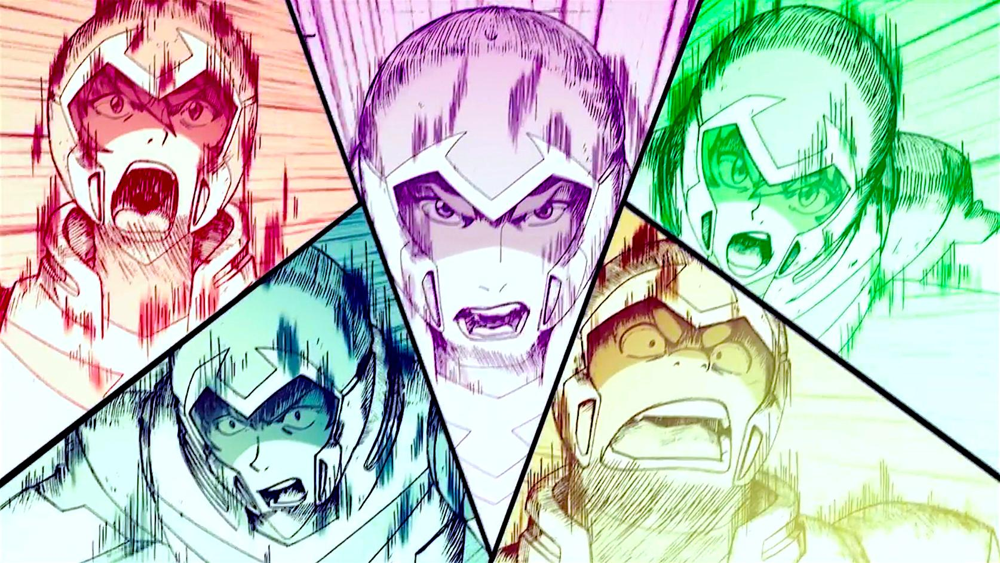

Voltron: Legendary Defender
For millennia, the evil Galra empire has plagued the universe by destroying other civilizations and enslaving various races. The only known threat strong enough against the empire's power and plans is the legendary "Defender of the Universe" Voltron, a 100 meter tall robot warrior composed of five lion mechas whose pilots are known as the Paladins. At the crux of the war that ended with the destruction of planet Altea, Voltron was separated by King Alfor of Altea in order to protect Voltron from falling into the Galran Emperor Zarkon's possession. King Alfor bonded the five lion's energies to his daughter Allura's life force and sent them across the universe to different locations until the time for the next generation of Paladins to appear and pilot Voltron arrived. Princess Allura, her retainer Coran, and the Altean Castle of Lions were hidden on planet Arus along with the Black Lion. In the present, the Galra Empire's path of conquest and search for Voltron has led them to Earth's solar system. A group of space pilots – Shiro, Keith, Lance, Pidge, and Hunk – discover the Blue Lion and immediately get swept up into the Galran War. They meet Princess Allura, become the next Paladins, and reunite the five lions to form Voltron and combat Emperor Zarkon's nefarious schemes, with the hopes of ultimately defeating the entire Galra Empire.
Why do I love this topic? Well, why not?. It is interesting for me because this cartoon/serie has an entertaining story and not always see, that is, despite being a remake series / cartoon, the original is equally interesting but has other sequels apart that to a certain extent ruin the story, and that is what was expected to this new series of original Dreamworks, but really knew to take advantage of the material and technology that currently has to create something new but still retain the original touch, the design of the characters is attractive, and the animation turns out to be exciting, it is a Series / cartoon I really recommend.
 